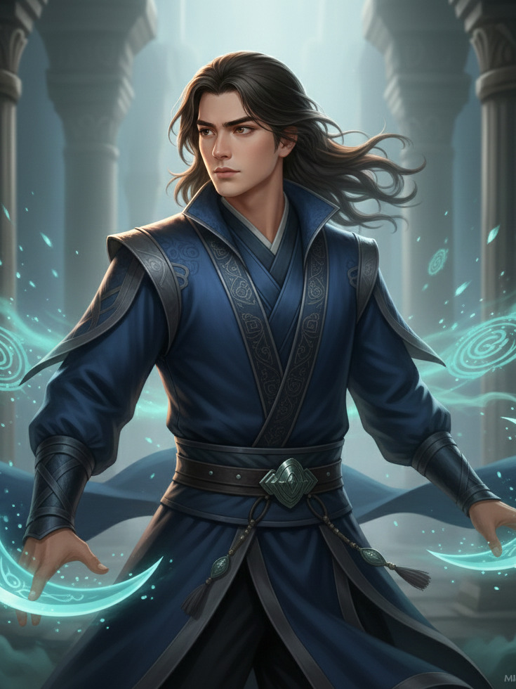
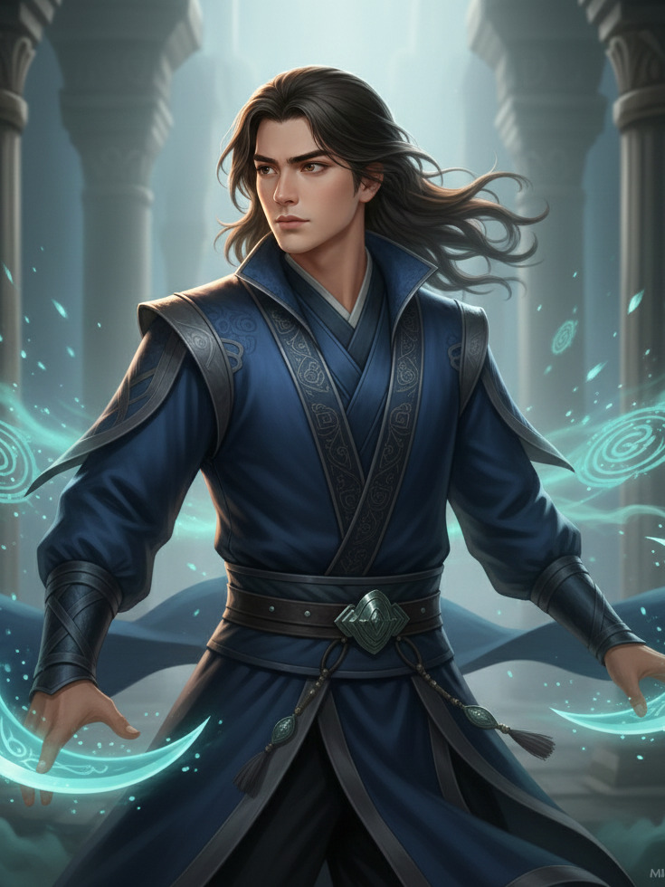

“一个相信‘一切皆可编码’的天才黑客，发现自己陷入了一个无法用代码破解的宿命循环。为了跳出这个循环，他必须找到那个一手编写了这一切的‘程序员’——神。”
故事梗概
墨氚，代号“叙事工程师”，游走在灰色地带的顶尖黑客。他能入侵任何系统，篡改任何数据。直到有一天，他发现自己的生活正在被精准地“重置”。每一次他做出关键选择，第二天醒来，一切都会回到选择之前。他唯一的变量，是他那个装载了海量老电影、有点神经质的AI助手“小叽”。一人一机，必须在无数次的时间循环中，找到那个隐藏在宇宙底层代码中的“bug”，并向其发起挑战。
视觉设定预览
 


主创笔记：“这是我最想拍的一个‘烧脑’故事。主角很酷，AI很烦，像《瑞克和莫蒂》。小叽会在墨氚破解防火墙的时候突然问他‘你觉得我俩像不像《泰坦尼克号》里的Jack和Rose？’，或者在时间重置后说‘又来？导演就不能换个剧本吗？’。这种在极致理性中的荒诞感，是我最想表达的。”